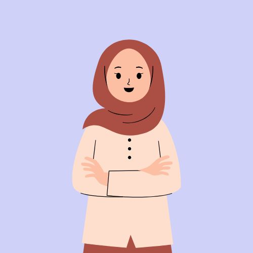
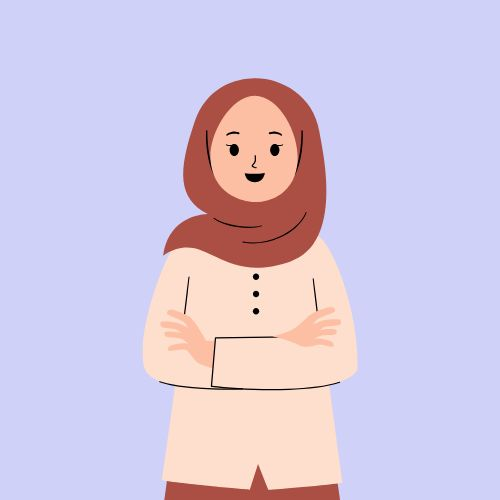
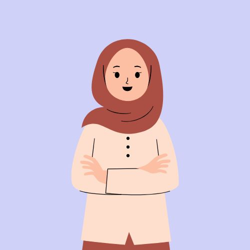

Galeri
Berikut adalah foto atau karya saya.

 


Halo! Saya Inka, seorang mahasiswa Sistem Informasi yang tertarik dengan desain web. Di sini, Anda bisa melihat karya-karya saya dalam dunia desain serta beberapa proyek yang saya kerjakan selama perkuliahan. Website ini adalah tempat saya berbagi pengalaman dan pembelajaran seputar desain web, dan saya berharap bisa menginspirasi Anda melalui setiap desain yang saya buat. Terima kasih telah mengunjungi situs saya!
Halo, saya Inka Amelia Putri, seorang mahasiswa Sistem Informasi dengan minat di bidang desain web. Saya fokus pada penggabungan teknologi dan desain untuk menciptakan situs yang responsif dan mudah digunakan. Selama perkuliahan, saya mempelajari berbagai bahasa pemrograman seperti HTML, CSS, dan JavaScript, serta alat desain lainnya. Melalui website ini, saya berbagi proyek-proyek dan pembelajaran seputar desain web yang saya lakukan. Terima kasih telah mengunjungi halaman ini!
| Jenjang Pendidikan | Institusi | Jurusan | Tahun Masuk - Tahun Lulus |
|---|---|---|---|
| Kuliah | STTIKOM Insan Unggul | Sistem Informasi | 2022 - Sekarang |
| SMA | SMAN 2 KS CILEGON | IPS | 2019 - 2022 |
| SMP | SMPN 3 CILEGON | - | 2016 - 2019 |
| SD | MIN 1 CILEGON | - | 2010 - 2016 |
Ketua Divisi PSDM Rohani Islam
SMAN 2 KS Cilegon • 2020 - 2022
Anggota Kewirausahaan
SMAN 2 KS Cilegon • 2019 - 2022
Anggota Club IPS
SMAN 2 KS Cilegon • 2019 - 2021
Berikut adalah foto atau karya saya.
